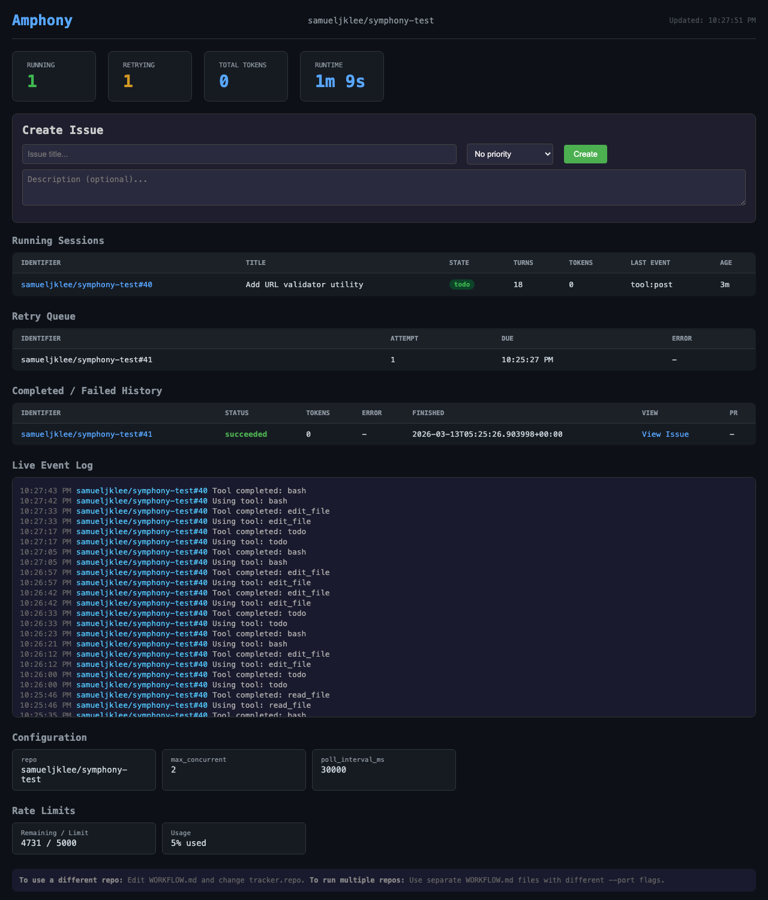

The Software Factory That Never Sleeps
Inspired by OpenAI's Symphony · Powered by Amplifier · March 2026
A published specification for autonomous software engineering daemons — a blueprint for an AI-driven factory that picks up issues, codes solutions, and opens pull requests without human intervention in the execution loop.
A full reimplementation of that spec using Amplifier as the runtime engine. Not a fork. Not a wrapper. A ground-up build that replaces three core dependencies with Amplifier-native equivalents — built in 7 days by a single engineer.
| OpenAI's Symphony | Amphony Replacement | Why It's Better |
|---|---|---|
| Linear issue tracker | GitHub Issues — labels as state machine | Labels map directly to spec states; free for any repo; native PR linking |
| Codex subprocess (JSON-RPC / stdio) |
In-process Amplifier sessions | No subprocess marshalling; full session control, recipes, skills, context |
| In-memory state store | DoltDB — git for data | Every mutation is a versioned commit; time-travel queries; crash-safe |
Every 30 seconds, scan GitHub Issues for eligible work. Apply the 7-gate eligibility check before advancing any issue.
Claim the issue by labeling it status:in-progress. Spin up an isolated workspace. Launch an Amplifier session with the rendered WORKFLOW.md prompt.
After each cycle, compare in-memory worker state against DoltDB truth. Detect stale runs, requeue retries, update labels to match actual state.
Failed runs enter a backoff queue. DoltDB stores retry counts and last-attempt timestamps. The reconciler requeues eligible retries on the next heartbeat.
Agent commits work, creates a branch, opens a PR via gh pr create, updates the issue label to status:done, stores the PR URL in DoltDB.
A single WORKFLOW.md with YAML frontmatter + Liquid prompt template configures the entire factory. Hot-reloaded on every dispatch cycle — change it while the service is running.
YAML Frontmatter
Liquid Prompt Template
All seven conditions must pass before an agent is dispatched. One failure = skip and evaluate the next issue.
A single failed gate causes the issue to be skipped. The orchestrator moves to the next candidate immediately.
No error crashes the service.

Auto-refreshes every 2 seconds. Live worker status, run history, PR links with review notifications, issue creation form, and real-time event log with humanized messages.
ANSI box-drawing characters render a compact factory-floor view — workers, queue depth, and recent events — without leaving the terminal.
JSON endpoints at /api/runs, /api/workers, and /api/events for integration with external tooling, scripts, or CI pipelines.
The complete lifecycle of a unit of work — from human intent to reviewable code, without human intervention in between.
The only human steps are the bookends: write the issue, review the PR. The 7 autonomous steps in between run 24/7 without intervention.
DoltDB stores every state mutation as a versioned commit. The complete history of every issue is auditable, time-travelable, and diff-able — like git log for your AI's decisions.
Amphony maps directly onto the physical factory model. Every element of the metaphor has a working implementation — the analogy is not decorative, it's structural.
| Physical Factory | Amphony Equivalent |
|---|---|
| Work orders | GitHub Issues |
| Factory blueprint | WORKFLOW.md |
| Assembly workers | Amplifier AI agents |
| Workstations | Isolated workspace directories |
| Quality inspection | Pull Request review |
| Production log | DoltDB audit trail |
| Floor monitor | Web Dashboard + Terminal TUI |
| Shift manager | The Orchestrator |
| Conveyor belt | Poll loop (30-second heartbeat) |
The human is the quality inspector, not the assembly line worker. Every PR waits for your review. You decide what ships.
Picking up issues, writing code, running tests, creating branches, drafting PRs, labeling issues, updating state — the entire execution loop, 24/7.
Writing the issue with clear acceptance criteria. Reviewing the PR. Deciding whether to merge. Setting the quality bar. Owning the outcome.
A single Amphony instance managing work queues across multiple repositories, with cross-repo dependency resolution built in.
Weighted issue priority for smarter dispatch ordering — urgent issues jump the queue, low-priority work fills idle capacity.
Per-issue and per-day token budget caps. Cost visibility baked into the dashboard and the DoltDB audit trail.
Exponential backoff with jitter, per-error-type retry policies, and configurable max-attempt limits directly in WORKFLOW.md frontmatter.
Webhook receivers for CI/CD events, Slack/Teams notifications for PR opens, and exportable Dolt snapshots for external audit trails.
Data as of: March 12, 2026 · Status: Active
Commands run against /Users/samule/repo/symphony:
git log --oneline — 49 commits found (Mar 5–12, 2026)git log --format="%an" | sort -u — 1 contributor: Samuel Leefind . -name "*.py" | xargs wc -l — 13,264 total Python lines (src + tests combined)find . -name "test_*.py" | xargs wc -l — 8,952 lines in test files (raw wc -l)grep -r "^def test_" — 162 test function definitions found by grep; author's count of 358 includes parametrized test expansionsSPEC.md + CONFORMANCE.md — 17 spec items documented as coveredAdditional sources:
/Users/samule/repo/symphonyOpenAI Symphony SPEC.md (Draft v1)100.66.81.45:8080Methodology note: “2,700 source lines” and “6,000 test lines” are author-reported figures that exclude blank lines and comments. Raw wc -l totals are 4,312 (source) and 8,952 (tests) respectively.